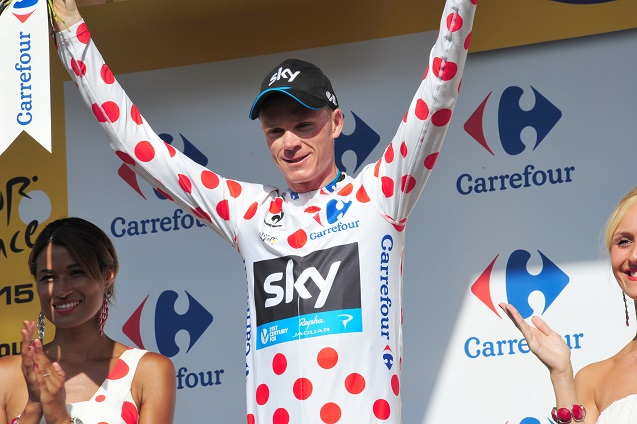

Le Tour de France
Une brève présentation
Par Uri Stolar
C'est Quoi?
Le Tour de France est une compétition cycliste par étapes qui a lieu principalement en France tout en traversant occasionnellement les pays voisins, comme l'Allemagne, l'Angleterre, la Belgique, l'Espagne, l'Italie, la Suisse, etc.
Depuis quand?
La course a lieu chaque année depuis sa première édition en 1903, excepté lors des deux guerres mondiales.
À quel periode de l'année?
Traditionnellement, la course se déroule principalement au mois de Juillet.
Et cette année?
Cette année (2017) sera la 104 édition du Tour de France.

Comment est composér le Tour?
Les éditions modernes du Tour de France se composent de 21 étapes réparties sur une période de 23 jours et couvrent près de 3 500 kilomètres.
Les maillots
Maillot Blanc
C'est un classement qui récompense le meilleur jeune coureur du Tour (25 ans maximum).
Maillot Vert
C'est un classement qui récompense le prèmier lieu sur le tableau de points (meilleur sprinter).
Maillot à Pois Rouges
C'est un classemenet qui récompense le prèmier lieu sur un course au la montagne (meilleur grimpeur).
Maillot Jaune
C'est le classement général qui détermine le vainqueur du Tour de France (temps le plus bas).
Plus de victoires
| Victoires | Cycliste | Années |
|---|---|---|
| 5 | Jacques Anquetil (FRA) | 1957, 1961, 1962, 1963, 1964 |
| 5 | Eddy Mercx "Le Cannibale" (BEL) | 1969, 1970, 1971, 1972, 1974 |
| 5 | Bernard Hinault (FRA) | 1978, 1979, 1981, 1982, 1985 |
| 5 | Miguel Indurain (ESP) | 1991, 1992, 1993, 1994, 1995 |
Et Mexique?
Le seul vainqueur mexicain d'une étape est Raúl Alcalá. En fait sur 1987 il a gagné un maillot blanc.
Questions?
Merci beaucoup!